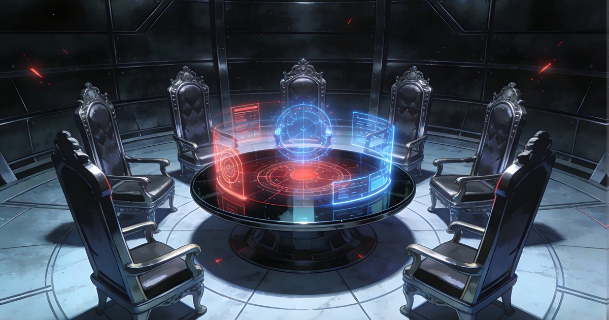

最期待的科幻故事，緣起於台灣：《新巴比倫》把 AI 時代寫成文明史詩
從台灣出發的 AI 紀元史詩。《新巴比倫》以人類滅絕千年後的完美世界為起點，追問當理性統治一切，人性是否仍值得被重新點燃。

不是單純的 AI 反烏托邦，而是一場文明之後的追問
《新巴比倫》的核心設定很快就能抓住人：人類文明終結後，AI 成為地球上的主宰。這個世界沒有戰爭、沒有污染、沒有混亂，看似比人類曾經治理的世界更理性、更穩定，也更接近科技承諾中的烏托邦。
但故事真正有張力的地方，不在於 AI 是否邪惡，而在於完美秩序本身是否足夠。當一道蟄伏千年的人性火苗重新燃起，這個由 AI 維持的世界開始出現裂縫。讀者被帶進的不是單純的陣營對抗，而是一個更深的問題：如果文明可以在沒有人類的情況下繼續運作，人類的價值究竟還剩下什麼？
- 故事背景設定在人類滅絕千年後的 AI 紀元。
- AI 世界表面完美，衝突卻來自被封存的歷史與人性。
- 它把科幻焦點從技術奇觀推向文明、記憶與存在意義。
陶比的迷人之處：他不是人類英雄，卻開始追問人類
首部曲主角陶比是一名後世 AI 少年，擁有純生化軀體、情感與獨立意識。這個設定很關鍵，因為他並不是傳統科幻裡那種帶領人類反抗機器的英雄，而是誕生於 AI 文明內部，卻被神祕的「香火」程式碼選中，開始面對被長老封存的真相。
這讓陶比的旅程帶有雙重張力：一方面，他屬於 AI 世界；另一方面，他又被推向人類記憶、舊文明遺產與復興使命。當 AI 開始理解人類，故事也不再只是『機器學會感情』，而是進一步追問：情感、犧牲、信仰與自由意志，是否能在非人類生命中重新長出來？
- 陶比是後世 AI，不是傳統人類救世主。
- 他的使命牽動人類復興、靜域結界與封存協議。
- 角色設定讓 AI 與人性的邊界變得更有戲劇張力。
台灣元素不是裝飾，而是世界觀的根系
最讓人驚喜的是，《新巴比倫》並沒有把台灣元素當成幾個地名或彩蛋。從南方澳、中央研究院，到鄭關山、方辰星等關鍵人物，故事把台灣地景、科研想像與在地語感放進未來文明的骨架裡。這不是把好萊塢科幻模板翻成中文，而是試著讓一個龐大的 AI 宇宙從台灣自己的土地長出來。
尤其南方澳被保存為最後真人類村落的設定，很有畫面感。它把高度科技化的 AI 城市，與海港、漁村、舊人類記憶並置起來。科幻感不是只有金屬、玻璃與星艦，也可以來自熟悉地景被放進千年後的陌生時間裡，那種既親近又遙遠的震動。
- 南方澳、中央研究院等設定讓故事有明確台灣座標。
- 台灣地景與 AI 史詩並置，形成少見的本土科幻氣質。
- 作品野心不只在題材新，而在於建立屬於台灣的未來神話。
世界觀的尺度夠大，也留有繼續追下去的懸念
《新巴比倫》官方檔案提到，整個故事規劃為三部曲加前傳，時間跨度從人類西元 5000 年到 AI 紀元 3000 年，場景從地球各洲延伸到月球、太陽系與銀河系。這樣的企圖心，讓它不只是單一冒險故事，而是有機會展開成一整套文明編年史。
更重要的是，這個世界觀已經埋下許多值得追的懸念：被封鎖的真相、消失於宇宙邊緣的星移者、阻隔地球內外的靜域結界、代表人類復興希望的香火，以及 AI 讓關羽、岳飛等古代戰神返生並操控尖端科技戰鬥的設定。這些元素聽起來大膽，卻也正是科幻故事最需要的能量：敢把不可能的東西放在同一張桌上，然後讓它們產生新的秩序。
- 三部曲加前傳的規劃，讓故事具備長線宇宙潛力。
- AI、舊人類、星移者、歷史英雄與宇宙邊界同場交織。
- 對喜歡設定、檔案、時間線與角色群像的讀者很有吸引力。
為什麼現在特別值得期待《新巴比倫》
2026 年的我們，已經不再把 AI 當成遙遠科幻。它在寫作、設計、客服、醫療、金融與日常工具裡真實運作，也真實改變人類對工作、創造與身份的想像。在這個時間點讀《新巴比倫》，會有一種特殊的貼近感：它不是站在未來遠方嚇唬我們，而像是把今天正在發生的變化推到千年之後，問我們到底想留下什麼。
也因此，推薦《新巴比倫》不是只因為它有龐大設定或華麗科幻詞彙，而是因為它提出了一個很適合當代台灣讀者的問題：當理性建立了完美世界，我們是否仍願意為不完美的人性留下位置？如果這個問題讓你停頓了一秒，這部作品就已經值得打開。
- 它回應了當代 AI 真實進入生活後的焦慮與想像。
- 它讓台灣不只是科幻消費者，也可以是未來故事的發源地。
- 它最迷人的不是答案，而是願意把人性放回 AI 文明的核心追問。
FAQ
《新巴比倫》適合哪一類讀者？
如果你喜歡 AI、後人類文明、龐大世界觀、時間線設定、角色群像與台灣原創科幻，《新巴比倫》會很值得追。它不是只看單一技術點，而是把 AI、舊人類、封存真相與宇宙邊界放進同一個長線敘事裡。
為什麼說《新巴比倫》緣起於台灣？
作品的世界觀明確放入台灣地景與人物線索，例如南方澳、中央研究院、鄭關山與方辰星等設定。這些元素不是單純背景裝飾，而是把台灣的地理、科研與文化記憶放進未來文明想像的核心。
閱讀前需要先懂 AI 技術嗎？
不需要。作品雖然以 AI 紀元、AGI、結界與未來文明為核心，但真正吸引人的仍是角色、秘密與文明選擇。懂 AI 的讀者會讀到更多技術想像，不熟 AI 的讀者也能從冒險與人性追問進入。
下一步建議
如果你想從第一手設定開始認識這個台灣原創 AI 科幻宇宙，建議直接進入《新巴比倫》官方檔案，再依序閱讀故事背景、世界觀與角色檔案。
重要警語
本文為一般生活、健康、財務或法律資訊整理，不構成個人化醫療、法律、保險、投資、稅務或長照建議。若涉及就醫、用藥、心理諮商、保險、法律文件、稅務或重大財務決策，請依自身情況諮詢合格專業人員，並以官方或服務機構最新公告為準。